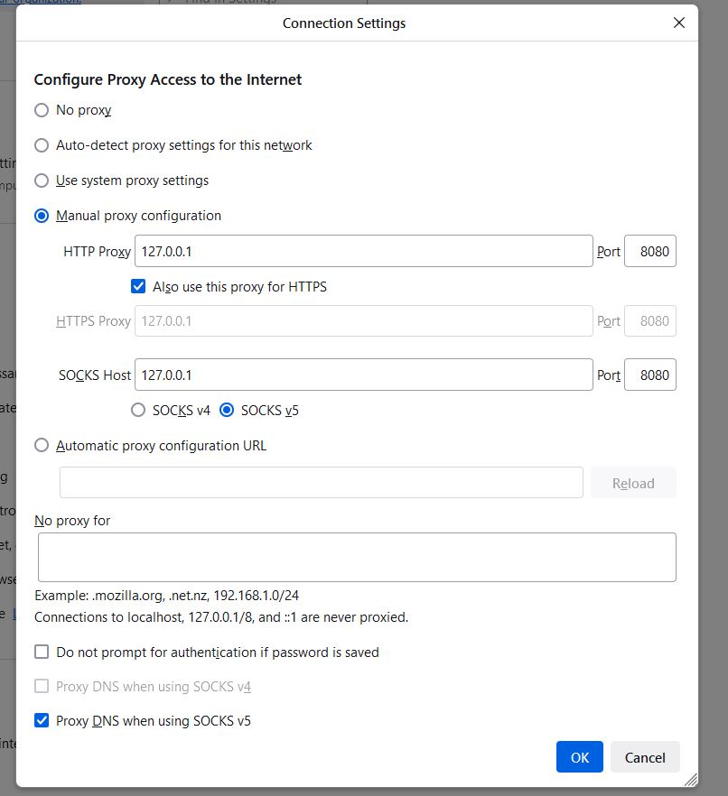
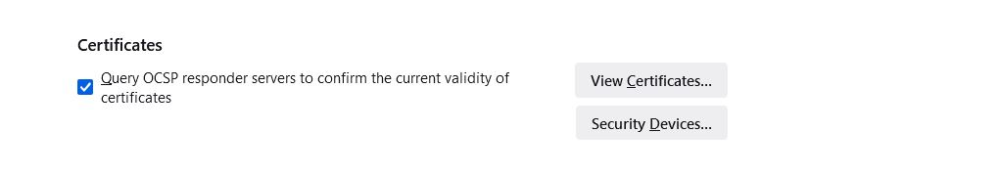
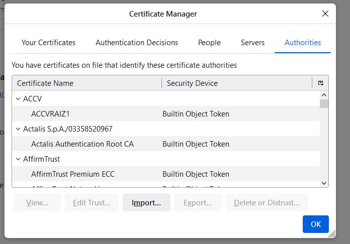
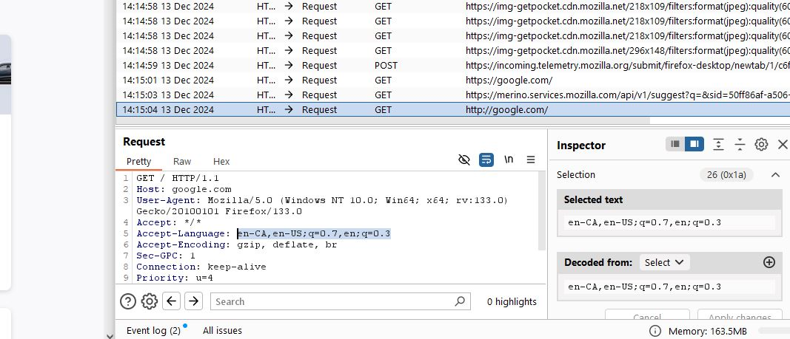

Intro to Burp Suite: Intercepting and modifying Internet Traffic

What is Burp Suite?
Burp Suite is an application that gives you all the tools to test and find vulnerabilities in web applications. For example: you can view information sent to specific location (i.e. web application servers), and modify the information before it is sent. This allows you to find potential bugs in their application, but it also allows you to learn all about networking and web application security.
-
How to find Burp Suite and download it.
-
How to get started with Burp Suite.
-
How to set up your Firefox browser to run with Burp Suite.
-
Analyze HTTPS headers and modify them before they are sent to the servers.
Here's what you'll see
1. How to find Burp Suite
Navigate to the PortSwigger website create an account and click "Products" and find "Burp Suite Community Edition"

Once you're in, click "download" and select your OS with whatever settings you need.

Go through the prompts and this will download the application onto your Desktop


2. Getting started with Burp suite.
Once you have the application download on your Desktop, click on it and get started. The Burp Suite Community edition gives you limited tools but you are still able to use it for a lot of things. In the first few screens, it will ask you click through a few options, because this is the Community Edition, it won't let you save your session for future use. Click on "Start Burp" and you will be taken to the dashboard.


Once you are in the main dashboard, this is where we will configure your Firefox browser. Althought there is an embedded browser that you can use. This will get you learning about networking and proxies.

3. How to set up your Firefox browser to run with Burp Suite.
This section will guide you through setting up your Burp Suite with Firefox. Open you Firefox browser and click on the burger menu and click settings and scroll to the bottom and find "network settings" Set you proxy screen to match the below image.  Now navigate to http://burp/ and this will take you to a site where you can download a certificate that validates PortSwigger as a legitimate website. Then go to Firefox settings and upload the certificate in the section below: click view Certificates-->import   And upload your cerificate and make sure the checkmakr is click on view websites.
4. Analyze and modify HTTPS headers
Once you are in Burp Suite and your firefox browser is set up to allow your local host as a proxy, you can start intercepting traffic. This will be a very simple example of how you can view HTTP headers and modify them. Go the the proxy tab and click on "Interceptor is off" to turn the interceptor on. Now open your Firefox Browser and type in "Google.com"
This will start populating your Burp Suite with responses and not send them through unless you select them an click foward.
Go through the responses and find one where the hostname says: "google.com" Then change the language header to: de, this will change the language of google to German 
If the german google screen doesn't load, just keep fowarding the requests, use the foward all to speed up the process.
This is a small example, but in theory this could be used to test different HTTP headers and modify them to test the web application for weaknesses, i.e. changing the request for certain authentication sessions or tokens. which could allow someone to bypass a login screen.
Notes:
https://medium.com/@JAlblas/tryhackme-burp-suite-basics-walkthrough-209ab703d6a1This page is based on the Bug Bounty Bootcamp book by: Vickie Li